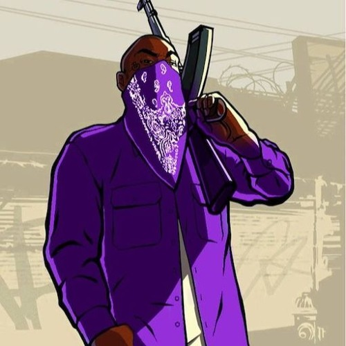
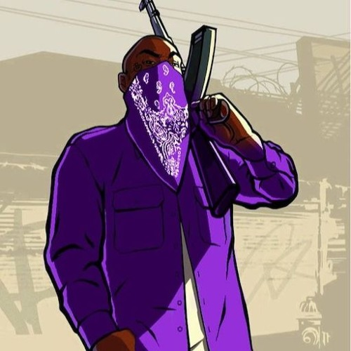


 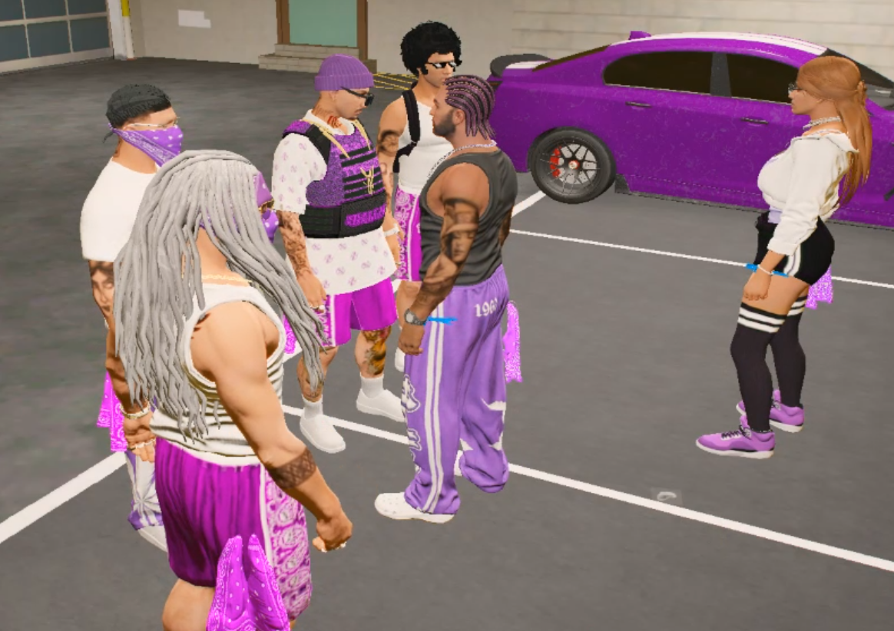
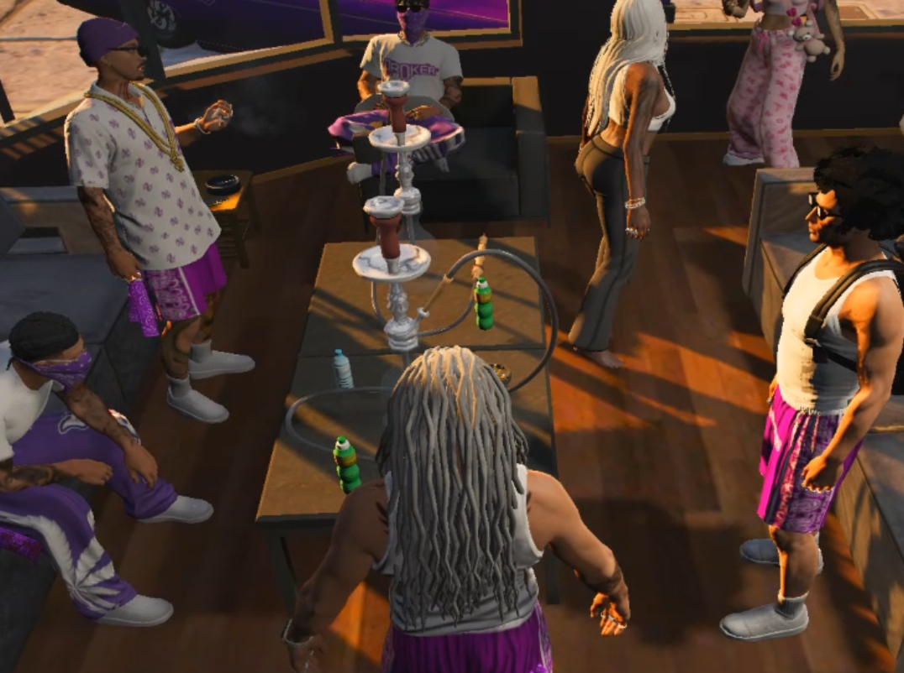
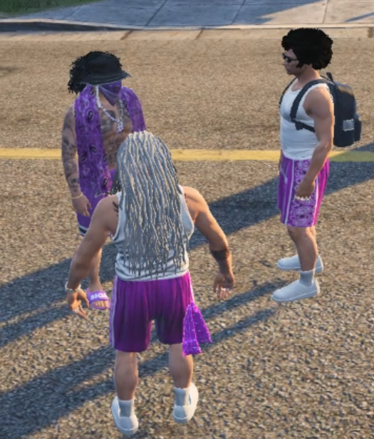
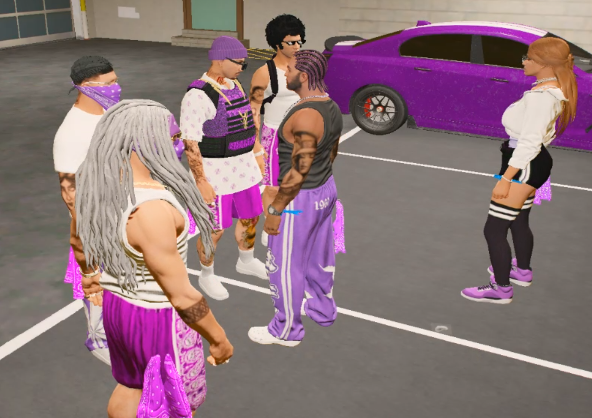
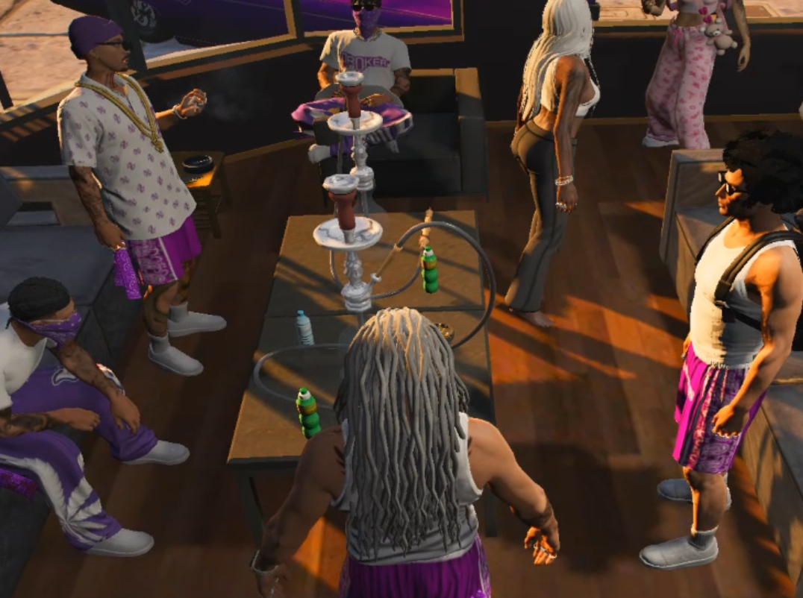
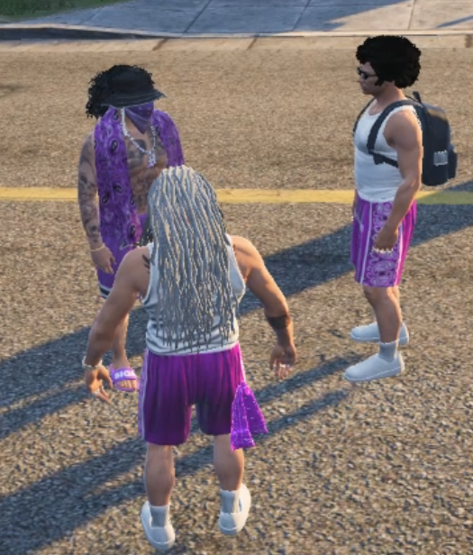
 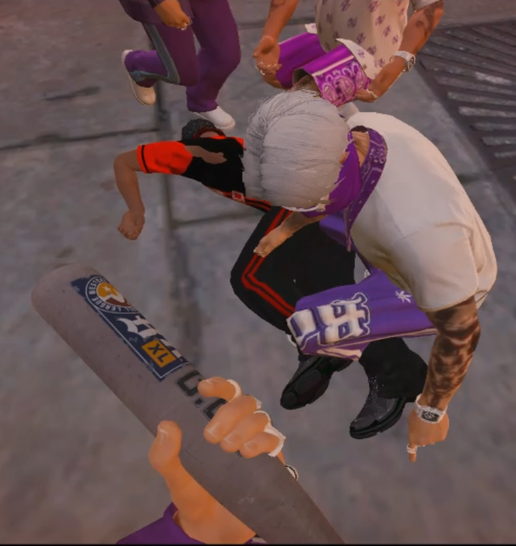
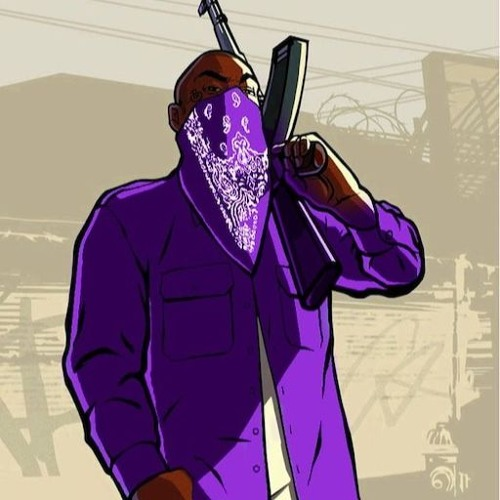
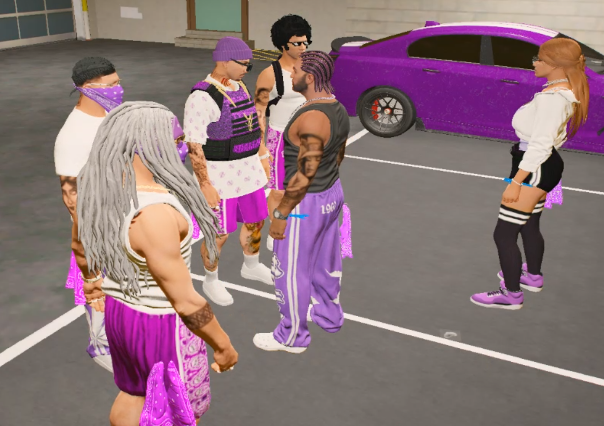
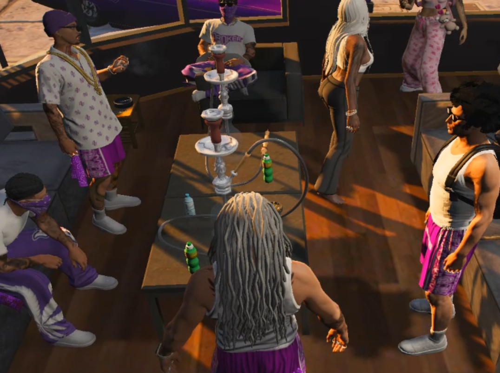
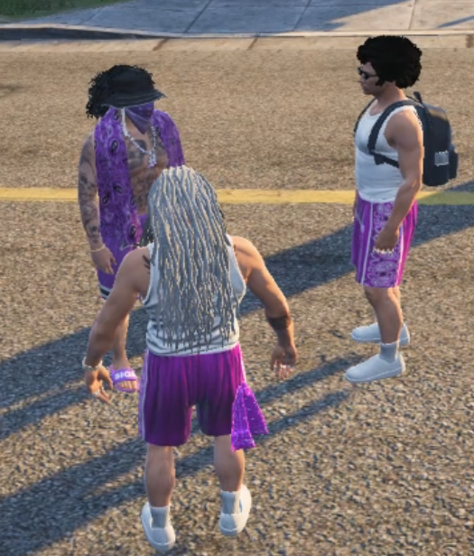
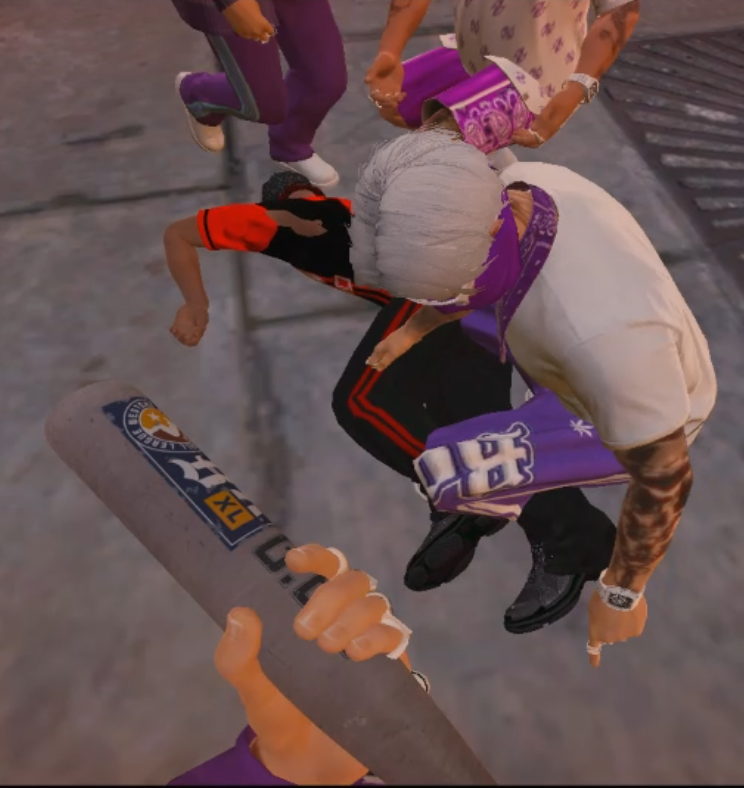
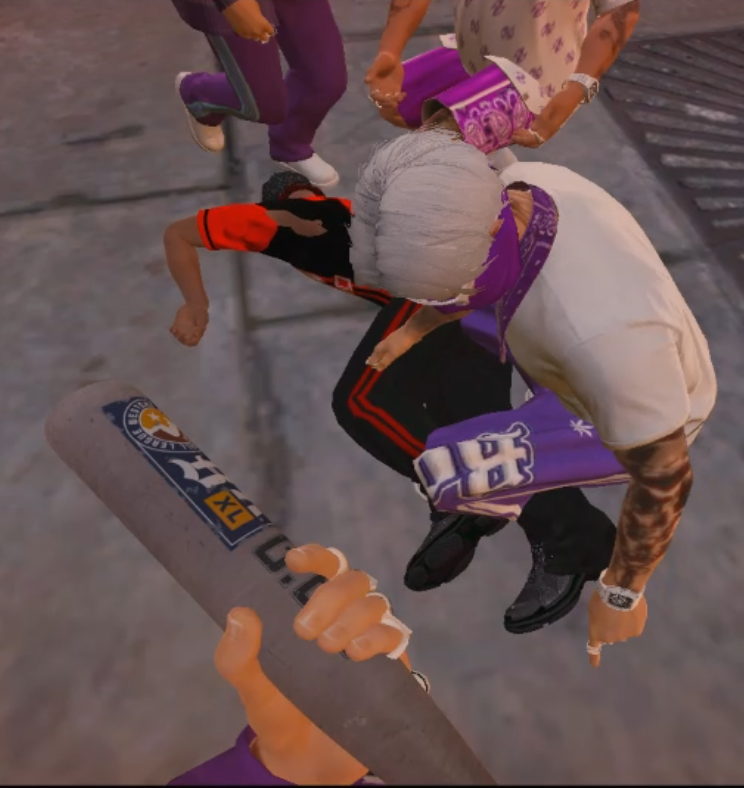
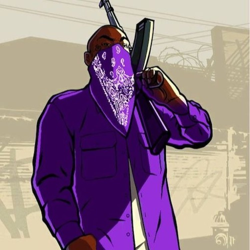
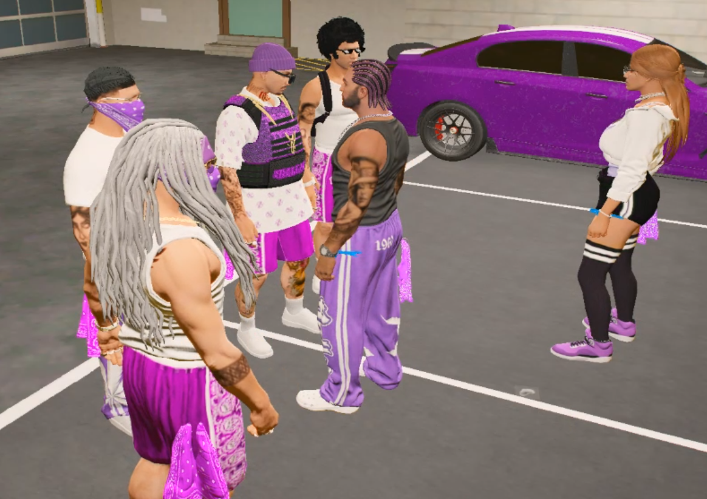
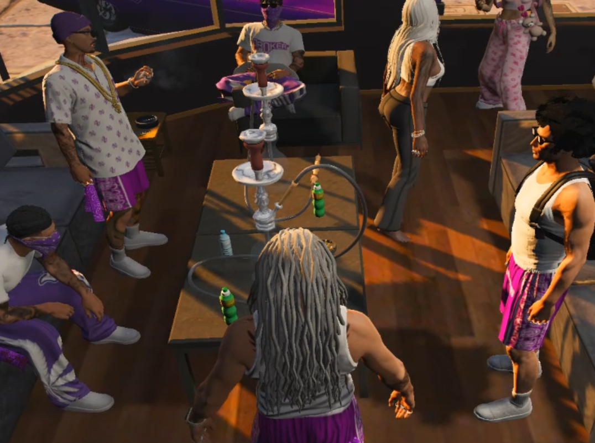
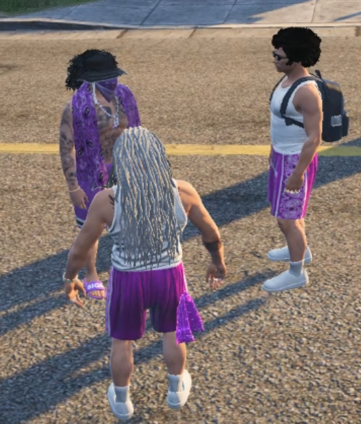
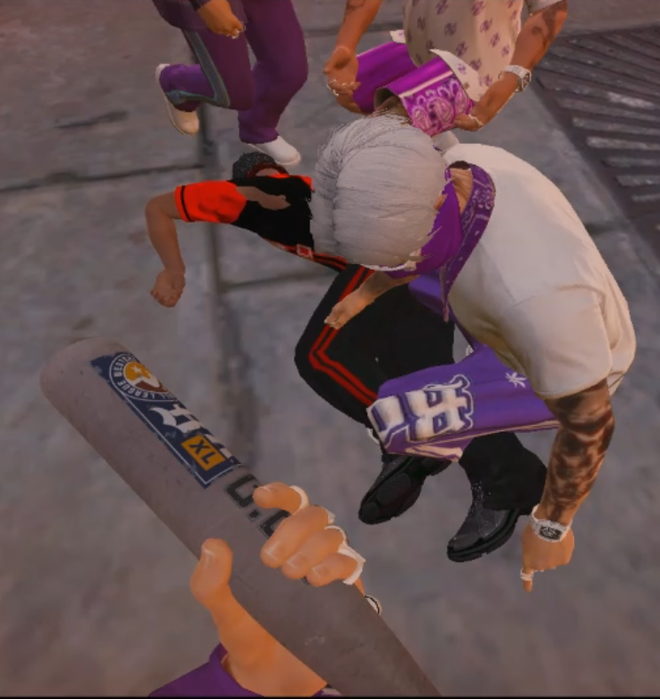

In Narco City herrschte die Ballas Gang im Jahr 2025 unter Yannik Bleuler, der OG zu dem Zeitpunkt. Auf der anderen Seite: Wir, ein paar Chaoten die Anschluss gesucht haben und die Ballas Gang für sich entdeckt haben. Aber ganz schnell wurde klar, die Ballas Gang ist nicht Kredibil genug.
Wir zogen uns aus Davis raus und verweilten von nun an auf der Westside. Die lila Farben sind im Herzen geblieben, wodurch es nun 2 Ballas in der Stadt gab. Die Davis Ballas waren uns zwar überlegen, aber uns war klar, dass das nicht lange halten wird und dafür mussten wir sorgen.

Wir machten es wie die Ballas in den 70ern. Wir griffen das Business der Davis Ballas an, in dem wir in der Stadt das Gerücht verbreiteten, dass der OG der Davis Ballas ein Copcaller ist. Maghreb, die Besitzer des Businesses in dem die Davis Ballas tätig sind, wollten Beweise. Wir lieferten gefälschte Bilder mit Cops und kurzerhand verloren die Davis Ballas das Recht auf die Nutzung der Weed Plantagen. Die Straßen schweigten nicht und sahen nicht tatenlos zu. Die Davis Ballas wurden vermehrt ausgegrenzt und innerhalb bröckelte die Struktur. Yannik Bleuler sah keine andere Wahl, als die Gang aufzulösen. Aber wir lagen richtig, denn zum Ende hin kam er ernsthaft auf die Idee die Hood und somit auch den Nährboden, den Stolz und die Ehre der Ballas zu verkaufen.